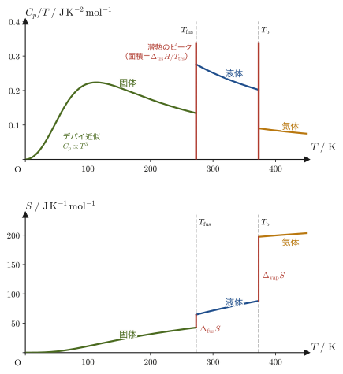
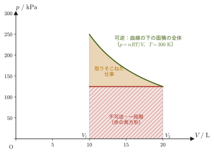

第30章自由エネルギー — 変化の向きと最大仕事
お湯に浮かべた氷は，ひとりでに融けて水になる．熱いフライパンは，ひとりでに冷めて周りの空気と同じ温度になる．どちらも自然に「一方向」にしか進まない変化であり，逆向き——$0\ ^\circ\mathrm{C}$ より高い部屋の中で，水がひとりでに氷になって周りを温める，冷えたフライパンがひとりでに熱くなる——は決して起こらない．前章（第29章）では，この「向き」を数量化する状態量としてエントロピー $S$ を定義し，孤立系（外部と熱のやりとりが一切ない系）では $\dd S\ge0$（エントロピー増大の法則）が成り立つこと，そして理想気体の断熱自由膨張が $\Delta S\gt0$ となることから自発変化であることを確認した．
しかし，実験室や工場でふつうに扱う系は，たいてい孤立系ではない．ビーカーの中の反応は，まわりの空気（大気圧）や実験台（一定温度の恒温槽）と熱・体積のやりとりをしながら進む．こういう「まわりと熱のやりとりがある系」で自発変化の向きを判定するには，$\dd S\ge0$ をそのまま使うわけにいかない——系のエントロピーだけを見ていたのでは，周囲のエントロピー変化を無視してしまうからである．本章では，前章のクラウジウスの不等式 $\dd S\ge \dd'Q/T$ を，まず「熱はどちら向きに流れるか」「相転移や温度変化でエントロピーはどう変わるか」という具体的な問いに応用したあと，実験室でもっとも普通に出会う2つの条件——体積・温度を一定に保つ場合と，圧力・温度を一定に保つ場合——について，クラウジウスの不等式を系だけの量で書き直す．そこから生まれるのが，ヘルムホルツ自由エネルギー $A$ とギブスエネルギー $G$ という2つの新しい状態量であり，これらは「系のエントロピーと周囲のエントロピーの両方を合わせた効果」を，系の変数だけで表現してくれる非常に便利な道具である．
後半では，$A,G$ の変化量が，可逆変化で系から取り出せる最大の仕事に等しいことを示す．電池や燃料電池がどれだけの仕事を取り出せるか，化学反応がどれだけの「有用な仕事」を生み出せるかを考えるとき，まさにこの $A,G$ が主役になる．最後に，ギブスエネルギーの温度依存性と，化学熱力学で頻繁に使われるギブス＝ヘルムホルツの式を導く．なお，クラウジウスの等式と理想気体の断熱自由膨張という2つの話題は，前章（29.7節・29.8節）ですでに扱ったので，本章冒頭ではその結論だけを短く振り返るにとどめる．
- クラウジウスの不等式 $\dd S\ge \dd'Q/T$ から，熱が高温から低温へ自発的に移動することを導き，相転移にともなうエントロピー変化 $\Delta_{\mathrm{trs}}S=\Delta_{\mathrm{trs}}H/T_{\mathrm{trs}}$ とトルートンの規則を学ぶ
- 定圧下での温度変化にともなうエントロピー変化 $S(T_2)=S(T_1)+\displaystyle\int_{T_1}^{T_2}\frac{C_p}{T}\,\dd T$ を導き，熱力学第3法則（絶対零度でエントロピー変化は0に近づく．完全結晶のエントロピーの基準は $S(0)=0$）を予告する
- クラウジウスの不等式を，定積・定温（非膨張仕事なし）の条件でヘルムホルツ自由エネルギー $A=U-TS$ の減少則 $\dd A\le0$ に，定圧・定温の条件でギブスエネルギー $G=H-TS$ の減少則 $\dd G\le0$ に，それぞれ書き直す
- 等温変化で系が外部にできる仕事の上限が $-\dd A$（膨張仕事を含む全仕事）に，定温・定圧で取り出せる非膨張仕事の上限が $-\dd G$ に等しいこと（等号は可逆変化のとき）を証明する
- ギブスエネルギーの温度依存性 $(\pdiff{G}{T})_p=-S\lt0$ と，2通りの形をもつギブス＝ヘルムホルツの式を導く
もとにしたノート：望月泰英『物理学ノート 熱力学』 pp. 50–54．
30.1 熱の移動方向性
「熱は高温の物体から低温の物体へ流れる」ということは，高校の物理でも当たり前の事実として習う．しかし，なぜそうなるのかを式で示せと言われると，高校の範囲では「熱力学第2法則がそう言っているから」としか答えられない．本節では，前章29.7節で導いたクラウジウスの不等式
$$ \dd S\ge\frac{\dd'Q}{T} $$と，孤立系でのエントロピー増大則 $\dd S\ge0$ を使って，「熱は高温から低温へ流れる」という事実を，不等式の計算として導く．
（前章の復習）クラウジウスの不等式で等号が成り立つのは可逆変化のときに限り，不可逆変化では $\dd S\gt\dd'Q/T$ である．右辺の $T$ は，系に熱を与える熱源の温度である．孤立系では $\dd'Q=0$ なので $\dd S\ge0$ となる．たとえば理想気体の断熱自由膨張は $\Delta S=nR\ln(V_2/V_1)\gt0$ なので自発的に起こる（29.8節）．以下では「定温」とは，熱源の温度が一定であるだけでなく，系の温度もその熱源の温度に等しく一定に保たれる，という意味で使う．
第28章の約束どおり，高温熱源の温度を $T_2$，低温熱源の温度を $T_1$（$T_2\gt T_1$）と書く（この節だけの使い方で，30.3節以降の $T_1,T_2$ は「加熱の始めと終わりの温度」である）．この高温熱源と低温熱源を，断熱材でできた箱の中で接触させる（図30.1）．箱全体（高温熱源＋低温熱源）は外部と熱・仕事のやりとりが一切ないので，孤立系である．高温熱源から低温熱源へ移動する微小な熱量を $\dd'Q$ とし，この向き（高温→低温）を正と約束する．このとき，高温熱源は熱 $\dd'Q$ を失うので，高温熱源が受け取る熱は $-\dd'Q$ であり，低温熱源は熱 $\dd'Q$ を受け取る．熱源はどちらも温度が一定に保たれる（熱容量が非常に大きいと考える）とすると，それぞれの熱源のエントロピー変化は，可逆的に熱をやりとりすると考えて $\dd S=\dd'Q_{\text{受取}}/T$（一定温度の熱源では，受け取る熱がどんなに小さくても温度が変わらないので，この関係は可逆・不可逆によらず成り立つ）から，
$$ \dd S_2=\frac{-\dd'Q}{T_2},\qquad\qquad \dd S_1=\frac{\dd'Q}{T_1} $$と書ける．
導出：熱は高温から低温へ流れる
箱全体は孤立系なので，エントロピー増大則 $\dd S_{\text{全体}}\ge0$ が成り立つ．全体のエントロピー変化は，高温熱源と低温熱源それぞれのエントロピー変化の和だから，
\begin{equation} \dd S_{\text{全体}}=\dd S_2+\dd S_1=-\frac{\dd'Q}{T_2}+\frac{\dd'Q}{T_1}\ge0 \label{eq:30-heat-direction-ineq} \end{equation}となる．左辺を $\dd'Q$ でくくると，
$$ \dd'Q\left(\frac{1}{T_1}-\frac{1}{T_2}\right)\ge0 $$が得られる．ここで $T_2\gt T_1\gt0$ なので，逆数をとると不等号の向きが反転して $1/T_1\gt1/T_2$，すなわち括弧の中身 $\left(\dfrac{1}{T_1}-\dfrac{1}{T_2}\right)$ は正である．正の数をかけても不等号の向きは変わらないから，この不等式が成り立つためには，
\begin{equation} \dd'Q\ge0 \label{eq:30-heat-direction} \end{equation}でなければならない．$\dd'Q$ は「高温熱源から低温熱源へ移動する熱量」として定義したのだから，式 \eqref{eq:30-heat-direction} は，熱が実際に高温から低温へ（$\dd'Q\gt0$，またはやりとりがなければ $\dd'Q=0$）流れることを意味する．熱が低温から高温へ自発的に流れる（$\dd'Q\lt0$）ことは，式 \eqref{eq:30-heat-direction-ineq} に矛盾するので起こらない．
（導出終わり）
注意：分母の温度は熱源ごとに違う
各熱源のエントロピー変化は，$-\dd'Q/T_2$ と $\dd'Q/T_1$ のように，それぞれの熱源の温度で割る．同じ $T$ で割ってしまうと $T_2\gt T_1$ の効果が消えて，熱が流れる向きの結論が出せない．
イメージ：なぜ低温から高温へは流れないのか
式 \eqref{eq:30-heat-direction-ineq} の意味を言葉で言い直すと，「熱源をあわせた全体のエントロピーは，高温から低温へ熱が流れるときに増える」ということである．高温熱源にとって熱 $\dd'Q$ を失うことによるエントロピーの減少 $\dd'Q/T_2$ よりも，低温熱源にとって同じ熱 $\dd'Q$ を得ることによるエントロピーの増加 $\dd'Q/T_1$ のほうが，$T_1\lt T_2$ である分だけ大きい（同じ熱量でも，もともと温度が低い物体が受け取るほうが，エントロピーの増え方は大きい）．そのため差し引きで全体のエントロピーは必ず増加する．逆向き（低温→高温）の熱移動を考えると，全体のエントロピーが減ってしまい，孤立系のエントロピー増大則に反するので起こらない．
例題30.1 高温熱源から低温熱源への熱移動とエントロピー変化
温度 $T_2=400\ \mathrm{K}$ の高温熱源から，温度 $T_1=300\ \mathrm{K}$ の低温熱源へ，熱量 $Q=100\ \mathrm{J}$ が移動した．高温熱源・低温熱源それぞれのエントロピー変化と，全体のエントロピー変化 $\Delta S_{\text{全体}}$ を求めよ．
解答 高温熱源は熱を失うので，そのエントロピー変化は
$$ \Delta S_2=\frac{-Q}{T_2}=\frac{-100\ \mathrm{J}}{400\ \mathrm{K}}=-0.250\ \mathrm{J/K} $$低温熱源は熱を得るので，
$$ \Delta S_1=\frac{Q}{T_1}=\frac{100\ \mathrm{J}}{300\ \mathrm{K}}=+0.333\ \mathrm{J/K} $$したがって，全体のエントロピー変化は
$$ \Delta S_{\text{全体}}=\Delta S_2+\Delta S_1=-0.250+0.333=+0.083\ \mathrm{J/K}\ (\gt0) $$となり，たしかに式 \eqref{eq:30-heat-direction-ineq} のとおり全体のエントロピーは増加する（もし熱が逆向き，すなわち低温から高温へ $100\ \mathrm{J}$ 移動したとすると，$\Delta S_{\text{全体}}=-0.083\ \mathrm{J/K}\lt0$ となって矛盾するので，その向きの移動は自発的には起こらない）．
30.2 相転移でのエントロピー変化
氷が融けて水になる，水が沸騰して水蒸気になる——こうした相転移（固体・液体・気体の間の状態変化）も，エントロピーの変化として捉えることができる．相転移は，融解であれば融解温度 $T_{\mathrm{trs}}$ という決まった温度で，圧力を一定に保ちながらゆっくり（準静的に）進む変化である．コップの中の氷に外部からゆっくり熱 $Q$ を加えて融かす場合を考えよう（図30.2の左の矢印．逆向きの変化，つまり水が凍る場合は，この節の後半で扱う）．相転移の間，温度は $T_{\mathrm{trs}}$ で一定に保たれるので，この過程は可逆的に扱ってよく，エントロピー変化は
$$ \Delta S=\frac{Q}{T_{\mathrm{trs}}} $$と書ける．さらに，圧力一定の変化では，第27章で見たとおり系が受け取る熱 $Q$ はエンタルピー変化 $\Delta H$ に等しい（$Q=\Delta H$）．相転移で出入りする熱量は潜熱（latent heat）とも呼ばれ，相転移によるエンタルピー変化なので $\Delta_{\mathrm{trs}}H$ と書く．これを代入すると，次の関係が得られる．
定理30.1 相転移のエントロピー
\begin{equation} \Delta_{\mathrm{trs}}S=\frac{\Delta_{\mathrm{trs}}H}{T_{\mathrm{trs}}} \label{eq:30-trs-entropy} \end{equation}である（$\Delta_{\mathrm{trs}}H$：相転移熱（潜熱），$T_{\mathrm{trs}}$：相転移温度）．右辺の単位は $\mathrm{J/mol}$ を $\mathrm{K}$ で割った $\mathrm{J/(K\,mol)}$ で，左辺のエントロピーの単位と一致する．融解であれば $\Delta_{\mathrm{fus}}S=\Delta_{\mathrm{fus}}H/T_{\mathrm{fus}}$，蒸発であれば $\Delta_{\mathrm{vap}}S=\Delta_{\mathrm{vap}}H/T_b$ と書く．固体→液体・液体→気体はいずれも $\Delta H\gt0$（熱を吸収する）ので $\Delta S\gt0$（エントロピーが増加する）——分子の配置の自由度が増える（規則正しい結晶 → 流動的な液体 → 自由に飛び回る気体）ことを考えれば，エントロピーが増加する向きであることは直感的にも納得できる．
イメージ：逆向きの相転移（凝固・凝縮）ではエントロピーが減る
相転移が逆向きに進む場合（水が凍る，水蒸気が凝縮する）は，系は同じ相転移温度 $T_{\mathrm{trs}}$ で，同じ大きさの熱を放出する．したがって $\Delta_{\mathrm{trs}}H$ の符号が逆になり，式 \eqref{eq:30-trs-entropy} の $\Delta_{\mathrm{trs}}S$ も符号が逆になる．たとえば，$0\ ^\circ\mathrm{C}$，$1\ \mathrm{atm}$ で水 $1\ \mathrm{g}$ が凍るとき，
$$ \Delta_{\text{凝固}}S=-\frac{\Delta_{\mathrm{fus}}H}{T_{\mathrm{fus}}}=-\frac{334\ \mathrm{J/g}}{273\ \mathrm{K}}\approx-1.22\ \mathrm{J/(K\cdot g)} $$である．系のエントロピーは減るが，これは第2法則に反しない．放出された熱 $334\ \mathrm{J}$ を，たとえば $-10\ ^\circ\mathrm{C}$（$263\ \mathrm{K}$）の冷たい周囲が受け取れば，周囲のエントロピーは $334\ \mathrm{J}/263\ \mathrm{K}\approx+1.27\ \mathrm{J/K}$ 増え，$1.22\ \mathrm{J/K}$ より大きいので，系と周囲を合わせた全体のエントロピーは増加する（30.1節と同じ考え方）．
応用：トルートンの規則（Trouton's rule）
水素結合や量子効果の小さい多くの液体では，蒸発エントロピー $\Delta_{\mathrm{vap}}S$ は物質によらずおよそ $85\ \mathrm{J/(K\cdot mol)}$ になることが経験的に知られている——これをトルートンの規則という．沸点 $T_b$ がわかれば，式 \eqref{eq:30-trs-entropy}（$\Delta_{\mathrm{vap}}H=T_b\Delta_{\mathrm{vap}}S$）から蒸発熱を見積もれる．水（約 $109\ \mathrm{J/(K\cdot mol)}$）のような水素結合をもつ液体は例外である．成り立つ理由，例外の詳しい議論，ベンゼンでの見積もりの例題は32.4節で扱う．
例題30.2 氷の融解エントロピー
氷（$1\ \mathrm{atm}$）の融解熱は $\Delta_{\mathrm{fus}}H\approx334\ \mathrm{J/g}$，融解温度は $T_{\mathrm{fus}}=273\ \mathrm{K}$（$0\ ^\circ\mathrm{C}$）である．氷 $1\ \mathrm{g}$ が融けるときのエントロピー変化 $\Delta_{\mathrm{fus}}S$ を求めよ．
解答 式 \eqref{eq:30-trs-entropy}に数値を代入すると，
$$ \Delta_{\mathrm{fus}}S=\frac{\Delta_{\mathrm{fus}}H}{T_{\mathrm{fus}}}=\frac{334\ \mathrm{J/g}}{273\ \mathrm{K}}\approx1.22\ \mathrm{J/(K\cdot g)} $$符号が正であることは，氷という規則正しい結晶構造が，分子が自由に動き回れる液体の水に変わることで，配置の乱雑さ（エントロピー）が増加することに対応している．
モル当たりにするには，水のモル質量 $18.0\ \mathrm{g/mol}$ をかければよい：$\Delta_{\mathrm{fus}}S\approx1.22\times18.0\approx22.0\ \mathrm{J/(K\cdot mol)}$．これは蒸発のエントロピー（トルートンの規則で約 $85\ \mathrm{J/(K\cdot mol)}$，例外の水で $109\ \mathrm{J/(K\cdot mol)}$）よりずっと小さい．融解では液体になっても分子間の相互作用による規則性がまだ残っているが，蒸発では分子がばらばらの気体になって乱雑さが一気に増えるからである．
30.3 温度変化に伴うエントロピー変化と絶対零度でのエントロピー（第3法則の予告）
相転移のような温度が一定の変化だけでなく，温度そのものが変わる変化でも，エントロピーは変化する．圧力を一定に保ったまま温度を $T_1$ から $T_2$ へゆっくり（準静的に）加熱する場合を考えよう．圧力一定・非膨張仕事なしの変化では，第27章で見たとおり $\dd H=\dd U+p\,\dd V=\dd'Q$ であり，かつ定圧熱容量 $C_p$ の定義から $\dd'Q=C_p\,\dd T$ である．準静的な変化なのでエントロピーの定義 $\dd S=\dd'Q_{\text{rev}}/T$ をそのまま使うと，
$$ \dd S=\frac{C_p}{T}\,\dd T $$が得られる．
注意：$C_p$ が温度に依存する場合
実在の物質では，熱容量 $C_p$ は一般に温度 $T$ に依存する（低温では原子の熱振動が量子力学的に「凍りつく」ため $C_p$ は小さく，高温になるほど大きくなる——これは統計力学の部で詳しく扱う）．正確な計算では，実験で得られた経験式，たとえば $C_p=a+bT+c/T^2$ のような形（$a,b,c$ は物質ごとに測定でフィットした定数）をそのまま積分する．温度の変化幅が小さい範囲では $C_p$ を一定とみなしてよいことが多く，本章の例題では，話を簡単にするため $C_p$ が温度によらず一定とみなせる範囲で計算する．
両辺を $T_1$ から $T_2$ まで積分すると，
$$ \int_{T_1}^{T_2}\dd S=\int_{T_1}^{T_2}\frac{C_p}{T}\,\dd T $$であり，左辺は $S$ が状態量（経路によらず，始状態と終状態だけで決まる量）であることから $S(T_2)-S(T_1)$ に等しい．したがって，
定理30.2 定圧下での温度変化にともなうエントロピー変化
\begin{equation} S(T_2)=S(T_1)+\int_{T_1}^{T_2}\frac{C_p}{T}\,\dd T \label{eq:30-S-integral} \end{equation}が得られる（$S$ は状態量で，その変化は始状態と終状態だけで決まる（第29章）ので，準静的な加熱の経路に沿った積分で計算してよい．定積分の計算については大学数学 第5章 5.1節）．
面白い話：絶対零度でのエントロピー
式 \eqref{eq:30-S-integral} で $T_1\to0$ の極限をとれば，任意の温度 $T$ でのエントロピー $S(T)$ を，絶対零度でのエントロピー $S(0)$ を基準にして表せることになる．では，$S(0)$ はどんな値だろうか．ガラスのように原子配置の乱雑さが絶対零度まで凍結された物質では $S(0)\gt0$ となり，これを残余エントロピーという（詳しくは32.2節）．
法則30.1 熱力学第3法則（予告）
絶対零度に近づくと，物質の変化にともなうエントロピー変化は $0$ に近づく（ネルンスト（Nernst）の熱定理）．これをふまえて，プランク（Planck）は，完全に結晶質（原子配置に一切の乱れがない，理想的な単結晶）の物質のエントロピーの基準を，絶対零度で
$$ S(0)=0 $$とおいた（本書ではこれを熱力学第3法則として使う）．正確な表現と歴史的背景は第32章で扱う．ここでは，$S(0)=0$ という結果だけを認めて，式 \eqref{eq:30-S-integral} の積分の基準点として使うことにする．
式 \eqref{eq:30-S-integral} で $T_1=0$，$S(0)=0$ とおくと，
\begin{equation} S(T)=\int_0^T\frac{C_p}{T}\,\dd T\qquad(\text{定圧下}) \label{eq:30-S-third-law} \end{equation}が得られる．この式について，2つのことを確認しておこう．第一に，$T\to0$ では格子振動の量子的な性質（デバイ（Debye）近似）により $C_p\propto T^3$ となるので，$C_p/T\propto T^2\to0$ であり，積分の下端が $T=0$ でも積分は有限の値になる（金属では電子の寄与で $C_p\propto T$ の項も加わるが，このときも $C_p/T$ は有限で積分は収束する）．第二に，熱容量 $C_p$ は正の量（熱を加えれば温度が上がる．熱力学的な理由は31.8節）なので，$C_p/T\gt0$ であり，$T\gt0$ ではつねに $S(T)=\int_0^T(C_p/T)\,\dd T\gt0$ である．この事実は30.6節で使う．
ただし，ここで注意しなければならないのは，$C_p/T$ が温度の全区間で連続な関数ではないという点である．物質が融解・蒸発すると，そのたびに一定温度で潜熱の吸収が起こり（30.2節），エントロピーが不連続に（階段状に）跳び上がる．したがって，融解温度 $T_{\mathrm{fus}}$・沸点 $T_b$をまたぐ場合は，積分を区間ごとに分けて計算し，相転移でのジャンプ分（30.2節の $\Delta_{\mathrm{trs}}S$）を足し合わせなければならない．
導出：融解・蒸発をまたぐ場合のエントロピー
$T_{\mathrm{fus}}\lt T\lt T_b$（固体が融けたあと，液体のままでいる温度範囲）のときは，積分を「固体（$0\to T_{\mathrm{fus}}$）」「融解によるジャンプ」「液体（$T_{\mathrm{fus}}\to T$）」の3つに分けて，
\begin{equation} S(T)=\int_0^{T_{\mathrm{fus}}}\frac{C_p^{\text{固体}}}{T}\,\dd T+\frac{\Delta_{\mathrm{fus}}H}{T_{\mathrm{fus}}}+\int_{T_{\mathrm{fus}}}^{T}\frac{C_p^{\text{液体}}}{T}\,\dd T \label{eq:30-S-piecewise-1} \end{equation}となる．さらに $T_b\le T$（蒸発を終えて気体になった温度範囲）のときは，これに「蒸発によるジャンプ」と「気体（$T_b\to T$）」の寄与を足して，
\begin{equation} S(T)=\int_0^{T_{\mathrm{fus}}}\frac{C_p^{\text{固体}}}{T}\,\dd T+\frac{\Delta_{\mathrm{fus}}H}{T_{\mathrm{fus}}}+\int_{T_{\mathrm{fus}}}^{T_b}\frac{C_p^{\text{液体}}}{T}\,\dd T+\frac{\Delta_{\mathrm{vap}}H}{T_b}+\int_{T_b}^{T}\frac{C_p^{\text{気体}}}{T}\,\dd T \label{eq:30-S-piecewise-2} \end{equation}となる．式 \eqref{eq:30-S-piecewise-1}・\eqref{eq:30-S-piecewise-2} のどちらも，「$C_p/T$ を連続な区間ごとに積分し，不連続点（相転移点）では $\Delta_{\mathrm{trs}}H/T_{\mathrm{trs}}$ をそのまま加える」という同じ考え方の繰り返しである．
（導出終わり）

例題30.3 定圧熱容量一定の近似での温度変化にともなうエントロピー変化
$1\ \mathrm{mol}$ の単原子分子理想気体（$C_p=\tfrac52R$，第23章）を，圧力一定のまま $T_1=298\ \mathrm{K}$ から $T_2=373\ \mathrm{K}$ まで加熱した．この間 $C_p$ を一定とみなせるとして，エントロピー変化 $\Delta S$ を求めよ．
解答 $C_p$ が温度によらず一定なら，式 \eqref{eq:30-S-integral}の積分は
$$ \Delta S=\int_{T_1}^{T_2}\frac{C_p}{T}\,\dd T=C_p\int_{T_1}^{T_2}\frac{\dd T}{T}=C_p\left[\ln T\right]_{T_1}^{T_2}=C_p\ln\frac{T_2}{T_1} $$と積分できる（$\displaystyle\int\frac{\dd T}{T}=\ln T+\text{定数}$ という対数関数の微分公式の逆——大学数学 第5章 5.1節——を使った）．数値を代入すると，
$$ \Delta S=\frac52R\ln\frac{373}{298}=\frac52\times8.314\ \mathrm{J/(mol\cdot K)}\times\ln(1.2517)\approx20.79\times0.2245\approx4.67\ \mathrm{J/(mol\cdot K)} $$となる．加熱すればエントロピーは必ず増加する（$\ln(T_2/T_1)\gt0$）ことが，この式の符号からも確認できる．
例題30.4 氷から水蒸気までのエントロピー変化
圧力 $1\ \mathrm{atm}$ のもとで，$1\ \mathrm{mol}$ の氷を $273.15\ \mathrm{K}$ から $373.15\ \mathrm{K}$ の水蒸気まで加熱した．融解エンタルピー $\Delta_{\mathrm{fus}}H=6.01\ \mathrm{kJ/mol}$，蒸発エンタルピー $\Delta_{\mathrm{vap}}H=40.66\ \mathrm{kJ/mol}$，液体の水の定圧モル熱容量 $C_{p,\mathrm{m}}=75.3\ \mathrm{J/(K\cdot mol)}$（温度によらず一定とする）として，エントロピー変化 $\Delta S$ を求めよ．
解答 過程を，(i) $273.15\ \mathrm{K}$ での融解，(ii) 液体の水の $273.15\ \mathrm{K}\to373.15\ \mathrm{K}$ の加熱，(iii) $373.15\ \mathrm{K}$ での蒸発，の3段階に分け，式 \eqref{eq:30-S-piecewise-2} の考え方で足し合わせる．
$$ \Delta S_{\mathrm{(i)}}=\frac{\Delta_{\mathrm{fus}}H}{T_{\mathrm{fus}}}=\frac{6010\ \mathrm{J/mol}}{273.15\ \mathrm{K}}\approx22.0\ \mathrm{J/(K\cdot mol)} $$ $$ \Delta S_{\mathrm{(ii)}}=\int_{T_{\mathrm{fus}}}^{T_b}\frac{C_{p,\mathrm{m}}}{T}\,\dd T=C_{p,\mathrm{m}}\ln\frac{373.15}{273.15}=75.3\times\ln(1.3661)\approx75.3\times0.3120\approx23.5\ \mathrm{J/(K\cdot mol)} $$ $$ \Delta S_{\mathrm{(iii)}}=\frac{\Delta_{\mathrm{vap}}H}{T_b}=\frac{40660\ \mathrm{J/mol}}{373.15\ \mathrm{K}}\approx109.0\ \mathrm{J/(K\cdot mol)} $$したがって，
$$ \Delta S=22.0+23.5+109.0\approx154.5\ \mathrm{J/(K\cdot mol)} $$となる．全体のエントロピー増加の大部分（約 $70\ \%$）が蒸発の段階で生じていることがわかる．これは図30.3（下段）で，$T_b$ での跳び上がりが $T_{\mathrm{fus}}$ での跳び上がりよりずっと大きいことに対応している．
30.4 ヘルムホルツ自由エネルギーとギブスエネルギーの導入
孤立系でのエントロピー増大則 $\dd S\ge0$（第29章）は，「外部と一切やりとりのない系」という限られた状況にしか使えない．しかし，実験室でふつうに扱うのは，恒温槽の中に置かれたビーカーのように，周囲と熱をやりとりする（孤立系ではない）系である．このような系に対しても，クラウジウスの不等式 $\dd S\ge\dd'Q/T$（第29章）自体はそのまま使える——ただし，右辺に系が受け取る熱 $\dd'Q$ が残っているため，これだけでは「系の変数だけを見て自発変化かどうか判定する」ことができない．本節では，実験室でよく出会う2つの条件のもとで，クラウジウスの不等式を系の状態量だけの不等式に書き直す．なお，クラウジウスの不等式の $T$ は熱源の温度であり，以下で「定温」というのは，系の温度もこの熱源の温度に等しく，一定に保たれているという意味である．
30.4.1 ヘルムホルツ自由エネルギー — 定積・定温の条件
まず，体積を一定に保ち，非膨張仕事（電気的な仕事など，体積変化にともなう仕事 $-p\,\dd V$以外の仕事）が働かない場合を考える．体積が変化しない（$\dd V=0$）うえに非膨張仕事もないのだから，系が受け取る仕事は $\dd'W=0$ である．熱力学第1法則 $\dd U=\dd'Q+\dd'W$（第23章）から，
$$ \dd U=\dd'Q\qquad(\text{定積，非膨張仕事なし}) $$となる．これをクラウジウスの不等式 $\dd S\ge\dd'Q/T$ に代入すると，$\dd S\ge\dd U/T$，すなわち $T\,\dd S\ge\dd U$，整理して
\begin{equation} \dd U-T\,\dd S\le0\qquad(\text{定積，非膨張仕事なし}) \label{eq:30-dU-TdS-ineq} \end{equation}という不等式が得られる．左辺 $\dd U-T\,\dd S$ は，系の状態量 $U,T,S$ だけで書かれている——外部の熱源については何も参照していない点に注目しよう．
定義30.1 ヘルムホルツ（自由）エネルギー $A$
\begin{equation} A\equiv U-TS \label{eq:30-A-def} \end{equation}をヘルムホルツ自由エネルギー（Helmholtz free energy）という．物理の教科書では $F$ と書くことも多いが，本書では $A$ と書く（第VII部・統計力学でも同じ記号 $A$ を使う）．$U,T,S$ はすべて状態量なので，$A$ もまた状態量である．
式 \eqref{eq:30-A-def} の両辺の微小変化をとると（積の微分法則 $\dd(TS)=T\,\dd S+S\,\dd T$ を使う），
\begin{equation} \dd A=\dd U-T\,\dd S-S\,\dd T \label{eq:30-dA-full} \end{equation}という，一般にいつでも成り立つ関係が得られる（ここではまだ定積・定温という条件を使っていない——単に $A$ の定義式を微分しただけである）．ここで温度が一定（$\dd T=0$）という条件を追加すると，式 \eqref{eq:30-dA-full} の第3項が消えて $\dd A=\dd U-T\,\dd S$ となる．これに，先ほど求めた式 \eqref{eq:30-dU-TdS-ineq}（定積・非膨張仕事なしの条件）を組み合わせると，次の結果が得られる．
法則30.2 ヘルムホルツ自由エネルギーによる自発変化の判定
体積・温度を一定に保ち，非膨張仕事が働かない変化では，
\begin{equation} \dd A\le0 \label{eq:30-dA-spontaneous} \end{equation}が成り立つ．すなわち，このような条件のもとでの自発変化（不可逆変化）では $A$ は必ず減少し，可逆変化（平衡状態にきわめて近い変化）では $\dd A=0$ となる．言い換えると，定積・定温のもとでは，系は $A$ が小さくなる向きに自発的に変化し，$A$ が最小になったところで平衡に達する．
30.4.2 ギブスエネルギー — 定圧・定温の条件
次に，圧力を一定に保ち，非膨張仕事が働かない場合を考える．定圧とは，外圧 $p_{\mathrm{ex}}$ と系の圧力 $p$ が等しい一定値（$p_{\mathrm{ex}}=p=\text{一定}$）であるという意味である．このとき系が受け取る仕事は膨張仕事だけ（$\dd'W=-p_{\mathrm{ex}}\dd V=-p\,\dd V$）であり，熱力学第1法則から $\dd'Q=\dd U-\dd'W=\dd U+p\,\dd V$ である．圧力が一定なので $p\,\dd V=\dd(pV)$ と書けて（$\dd p=0$ だから），
$$ \dd'Q=\dd U+\dd(pV)=\dd(U+pV)=\dd H\qquad(\text{定圧，非膨張仕事なし}) $$となる（第27章のエンタルピーの定義 $H\equiv U+pV$ を使った）．これをクラウジウスの不等式 $\dd S\ge\dd'Q/T$ に代入すると，$\dd S\ge\dd H/T$，すなわち $T\,\dd S\ge\dd H$，整理して
\begin{equation} \dd H-T\,\dd S\le0\qquad(\text{定圧，非膨張仕事なし}) \label{eq:30-dH-TdS-ineq} \end{equation}が得られる．
定義30.2 ギブス（自由）エネルギー $G$
\begin{equation} G\equiv H-TS=U+pV-TS \label{eq:30-G-def} \end{equation}をギブスエネルギー（Gibbs energy，ギブス自由エネルギーとも呼ぶ）という．$H,T,S$ はすべて状態量なので，$G$ もまた状態量である．
ヘルムホルツ自由エネルギーのときとまったく同じ手順で，式 \eqref{eq:30-G-def} の全微分は一般に
\begin{equation} \dd G=\dd H-T\,\dd S-S\,\dd T \label{eq:30-dG-full} \end{equation}であり，定温（$\dd T=0$）では $\dd G=\dd H-T\,\dd S$ となる．これに式 \eqref{eq:30-dH-TdS-ineq}（定圧・非膨張仕事なしの条件）を組み合わせると，
法則30.3 ギブスエネルギーによる自発変化の判定
圧力・温度を一定に保ち，非膨張仕事が働かない変化では，
\begin{equation} \dd G\le0 \label{eq:30-dG-spontaneous} \end{equation}が成り立つ．すなわち，定圧・定温のもとでは，系は $G$ が小さくなる向きに自発的に変化し，$G$ が最小になったところで平衡に達する．
イメージ：$\dd G\le0$ は「系と周囲を合わせた全エントロピーの増大」と同じ主張
本章の冒頭で，$A$ と $G$ は「系のエントロピーと周囲のエントロピーの両方を合わせた効果を，系の変数だけで表す」と述べた．そのことを確かめよう．定圧・定温・非膨張仕事なしの変化では，周囲（温度 $T$ の熱源）は，系が受け取る熱 $\dd'Q=\dd H$ の分だけ熱を失い，$-\dd H$ の熱を受け取る．一定温度の熱源のエントロピー変化は，受け取る熱をその温度で割ったものなので，周囲のエントロピー変化は $-\dd H/T$ である．したがって，系と周囲を合わせた全体のエントロピー変化は，
$$ \dd S_{\text{全体}}=\dd S+\left(-\frac{\dd H}{T}\right)=-\frac{\dd H-T\,\dd S}{T}=-\frac{\dd G}{T} $$となる．全体のエントロピー増大則 $\dd S_{\text{全体}}\ge0$ は，$T\gt0$ なので $\dd G\le0$ とまったく同じ主張である．同様に，定積・定温では $\dd S_{\text{全体}}=-\dd A/T$ となる．
「自由エネルギー」という名前の由来もここから見えてくる．$U$ や $H$ のうち $TS$ の部分は，エントロピーの変化にともなって熱として周囲に出入りせざるを得ない部分であり，仕事として自由に使えるとは限らない．残りの $A=U-TS$ や $G=H-TS$ が，仕事として取り出せる「自由な」部分に当たる（このことは30.5節で確かめる）．
イメージ：$A$ と $G$ の使い分け
$A$ と $G$ はどちらも「エントロピー増大則を，系の変数だけで書き直したもの」であり，役割はまったく同じ——ただし前提とする条件が違う．密閉した容器（体積が変えられない）の中の変化なら $A$，大気圧に開放された容器（体積は自由に変わるが，圧力は大気圧のまま）の中の変化なら $G$ を使う．化学や材料科学で扱う反応の大半は，フラスコやビーカーを大気に開けたまま，一定温度（室温や反応温度）で行うので，圧力一定・温度一定の条件に合う $G$ のほうが実際にはよく使われる．
例題30.5 どちらの自由エネルギーを使うべきか
次の(a)(b)それぞれの状況で，自発変化の向きを判定するのに $A$ と $G$ のどちらを使うべきか答えよ．(a) ふたを閉めて密閉した鋼鉄製の圧力容器（体積が変えられない）の中で，一定温度に保った化学反応．(b) 大気に開放したビーカーの中で，室温・大気圧のもとで進む中和反応．
解答 (a) 圧力容器は体積が一定（$\dd V=0$）に固定されているので，法則30.2の前提（定積・定温）に合致する．したがって $A$ を使い，$\dd A\le0$ となる向きに反応が進む．(b) 大気に開放したビーカーは，体積は自由に変わりうるが，圧力はつねに大気圧で一定に保たれる（大気という巨大な「圧力だめ」と釣り合っている）．温度も室温で一定とみなせるので，法則30.3の前提（定圧・定温）に合致し，$G$ を使って $\dd G\le0$ となる向きに反応が進む．実験室での反応の大半は(b)の状況（大気に開放，一定温度）であり，これが化学熱力学で $G$ が主役になる理由である．
例題30.6 氷はどの温度から融けるか — $\Delta G=\Delta H-T\Delta S$ の符号
圧力 $1\ \mathrm{atm}$ で氷が融けて水になる変化を考える．融解エンタルピー $\Delta_{\mathrm{fus}}H=6.01\ \mathrm{kJ/mol}$，融解温度 $T_{\mathrm{fus}}=273.15\ \mathrm{K}$ とし，$\Delta_{\mathrm{fus}}H$ と $\Delta_{\mathrm{fus}}S$ は考える温度範囲で温度によらないと近似する．(1) $\Delta_{\mathrm{fus}}S$ を求めよ．(2) $263.15\ \mathrm{K}$（$-10\ ^\circ\mathrm{C}$）と $283.15\ \mathrm{K}$（$10\ ^\circ\mathrm{C}$）での $\Delta G=\Delta_{\mathrm{fus}}H-T\Delta_{\mathrm{fus}}S$ を計算し，氷が融けるかどうかを判定せよ．(3) $\Delta G=0$ となる温度を求めよ．
解答 (1) 式 \eqref{eq:30-trs-entropy} より，
$$ \Delta_{\mathrm{fus}}S=\frac{6010\ \mathrm{J/mol}}{273.15\ \mathrm{K}}\approx22.0\ \mathrm{J/(K\cdot mol)} $$(2) 定圧・定温の変化（非膨張仕事なし）なので，$\Delta G\lt0$ となる向きに変化が自発的に進む（法則30.3）．$T=263.15\ \mathrm{K}$ では，
$$ \Delta G=6010-263.15\times22.0\approx6010-5790\approx+2.2\times10^{2}\ \mathrm{J/mol}\ (\gt0) $$なので，氷は融けない（逆向きの凝固が自発的）．$T=283.15\ \mathrm{K}$ では，
$$ \Delta G=6010-283.15\times22.0\approx6010-6230\approx-2.2\times10^{2}\ \mathrm{J/mol}\ (\lt0) $$なので，氷は自発的に融ける．
(3) $\Delta G=\Delta_{\mathrm{fus}}H-T\Delta_{\mathrm{fus}}S=0$ を $T$ について解くと，
$$ T=\frac{\Delta_{\mathrm{fus}}H}{\Delta_{\mathrm{fus}}S}=\frac{6010}{22.0}=273.15\ \mathrm{K} $$となり，融解温度 $T_{\mathrm{fus}}$ に一致する．この温度では $\Delta G=0$，つまり氷と水が平衡で共存する．低温では $\Delta H$（熱を吸収するのは不利）の項が，高温では $-T\Delta S$（乱雑さが増えるのは有利）の項が効いて，符号が入れ替わる．この $G=H-TS$ の温度変化に注目して相の安定性を調べる様子は，gibbs-simulator でも確かめられる．
30.5 最大仕事と非膨張の最大仕事
ヘルムホルツ自由エネルギー $A$ とギブスエネルギー $G$ は，自発変化の向きを判定するだけでなく，「系からどれだけの仕事を取り出せるか」という，工学的にきわめて重要な問いにも答えてくれる．本節では，可逆変化で系から取り出せる仕事の最大値が，まさに $A,G$ の変化量に等しいことを示す．
30.5.1 最大仕事
熱力学第1法則 $\dd U=\dd'Q+\dd'W$（$\dd'W$：系が外部からされた仕事，第23章の符号の約束）と，クラウジウスの不等式 $\dd S\ge\dd'Q/T$ の2つを組み合わせる．クラウジウスの不等式を $\dd'Q\le T\,\dd S$ の形に書き換え，第1法則 $\dd'Q=\dd U-\dd'W$ を代入すると，
$$ \dd U-\dd'W\le T\,\dd S $$となる．この不等式の両辺に $\dd'W$ を加え，$T\,\dd S$ を引くと $\dd U-T\,\dd S\le\dd'W$，すなわち（負の数をかけているわけではないので，不等号の向きは変わらない），
\begin{equation} \dd'W\ge\dd U-T\,\dd S \label{eq:30-work-ineq} \end{equation}が得られる（$T$ は熱源の温度）．ここで温度が一定（等温変化）であるという条件を追加すると，30.4節の式 \eqref{eq:30-dA-full}（$\dd T=0$ のとき $\dd A=\dd U-T\,\dd S$）から，右辺はちょうど $\dd A$ に等しい．
法則30.4 最大仕事
等温変化では，
\begin{equation} \dd'W\ge\dd A \label{eq:30-max-work} \end{equation}が成り立つ．等号が成り立つのは可逆変化の場合に限る（クラウジウスの不等式で等号が成り立つのが可逆変化の場合であったことと対応する）．
系が外部にした仕事 $\dd'W'=-\dd'W$ を使って書き直すと，$\dd'W'\le-\dd A$ となる．すなわち，等温で系が外部にできる仕事は，$A$ の減少量 $-\dd A$ を超えられない．
イメージ：なぜ「最大仕事」と呼ぶのか
系が外部にした仕事 $\dd'W'=-\dd'W$ を使って法則30.4を書き直すと，
$$ \dd'W'\le-\dd A $$となる．右辺の $-\dd A$ は，$A$ が減る（$\dd A\lt0$）ときに正の値になる「$A$ の減少量」である．つまり，等温で系が外部にできる仕事は $A$ の減少量を超えられず，等号（＝仕事を最大限に取り出せる場合）が成り立つのは可逆変化のときだけである．これが，$-\dd A$ が「（等温変化で系から取り出せる）最大仕事」と呼ばれる理由である．不可逆に（急激に，摩擦をともなって）変化させると，同じ $\dd A$ の変化に対して取り出せる仕事は必ず $-\dd A$ より小さくなる——摩擦や乱流によって，本来仕事として取り出せたはずのエネルギーの一部が熱として散逸してしまうからである．
（補足）系が外部に仕事をして（$\dd'W\lt0$）$A$ が減る（$\dd A\lt0$）変化に限れば，$\dd'W\ge\dd A$ の両辺が負なので，大きさで書いて $\abs{\dd'W}\le\abs{\dd A}$ となる．逆に，外部から仕事をされて $A$ が増える変化（$\dd A\gt0$）では，$\dd'W\ge\dd A\gt0$ なので，必要な仕事は少なくとも $\dd A$ 以上である．たとえば等温で気体を圧縮するとき，可逆的に行えば必要な仕事が最小になる．
30.5.2 非膨張の最大仕事
系が受け取る仕事 $\dd'W$ は，気体の体積変化にともなう膨張仕事 $\dd'W_{\text{膨張}}=-p_{\mathrm{ex}}\dd V$（$p_{\mathrm{ex}}$ は外圧）と，それ以外の仕事である非膨張仕事 $\dd'W_{\text{非膨張}}$ の和
$$ \dd'W=-p_{\mathrm{ex}}\dd V+\dd'W_{\text{非膨張}} $$として書ける．非膨張仕事の例は，電池が回路に電気的な仕事をする場合（このとき系がされる仕事 $\dd'W_{\text{非膨張}}$ は負）や，電気分解で外部から電気的な仕事をされる場合（正）などである．定圧の変化とは，外圧 $p_{\mathrm{ex}}$ と系の圧力 $p$ が等しい一定値（$p_{\mathrm{ex}}=p=\text{一定}$）の変化のことである．いま，上の $\dd'W$ を式 \eqref{eq:30-work-ineq}（$\dd'W\ge\dd U-T\,\dd S$，等温・定圧などの条件をまだ使っていない一般の不等式）に代入すると，
$$ -p_{\mathrm{ex}}\dd V+\dd'W_{\text{非膨張}}\ge\dd U-T\,\dd S $$となり，$\dd'W_{\text{非膨張}}$ について解くと，
$$ \dd'W_{\text{非膨張}}\ge\dd U+p_{\mathrm{ex}}\dd V-T\,\dd S $$が得られる．ここでさらに定圧（$p_{\mathrm{ex}}=p=\text{一定}$）であるという条件を追加すると，$p\,\dd V=\dd(pV)$（$\dd p=0$ なので）だから，右辺の $\dd U+p\,\dd V=\dd U+\dd(pV)=\dd(U+pV)=\dd H$ であり，かつ30.4節の式 \eqref{eq:30-dG-full}（$\dd T=0$ のとき $\dd G=\dd H-T\,\dd S$）から，右辺全体はちょうど $\dd G$ に等しい．
法則30.5 非膨張の最大仕事
定温・定圧の変化では，
\begin{equation} \dd'W_{\text{非膨張}}\ge\dd G \label{eq:30-max-work-nonexp} \end{equation}が成り立ち，等号は可逆変化のときに限る．系が外部にした非膨張仕事 $\dd'W'_{\text{非膨張}}=-\dd'W_{\text{非膨張}}$ で書けば，法則30.4と同じ論法により，
$$ \dd'W'_{\text{非膨張}}\le-\dd G $$である．すなわち，$-\dd G$（$G$ の減少量）は，一定の温度・圧力のもとで系から取り出せる最大の非膨張仕事である．

例題30.7 理想気体の等温可逆膨張での最大仕事
$1\ \mathrm{mol}$ の理想気体を，温度 $T=300\ \mathrm{K}$ に保ったまま，体積を $V_1$ から $V_2=2V_1$ まで準静的（可逆的）に膨張させた．このとき系が外部にした仕事 $W'$ を求め，これがヘルムホルツ自由エネルギーの変化 $\Delta A$ を使って $W'=-\Delta A$ と書けること（最大仕事になっていること）を確かめよ．
解答 準静的なので $p_{\mathrm{ex}}=p$ としてよい．理想気体の等温可逆膨張で系が外部からされる仕事は，第23章で求めたとおり
$$ W=-\int_{V_1}^{V_2}p\,\dd V=-nRT\int_{V_1}^{2V_1}\frac{\dd V}{V}=-nRT\ln2 $$ $$ =-1\times8.314\times300\times\ln2\approx-1729\ \mathrm{J} $$である．したがって，系が外部にした仕事は $W'=-W=nRT\ln2\approx+1729\ \mathrm{J}$ である（$W$ が負なのは，系が外部から仕事をされたのではなく，外部に仕事をしたからである）．
一方，等温変化なので理想気体の内部エネルギーは変化せず（$\Delta U=0$），ヘルムホルツ自由エネルギーの定義 $A=U-TS$（式 \eqref{eq:30-A-def}）より，$T$ が一定なので $\Delta A=\Delta U-T\Delta S=-T\Delta S$ である．第29章で求めた理想気体の等温膨張のエントロピー変化 $\Delta S=nR\ln(V_2/V_1)=nR\ln2$ を使うと，
$$ \Delta A=-T\Delta S=-nRT\ln2\approx-1729\ \mathrm{J} $$となり，$W=\Delta A$，すなわち $W'=-\Delta A$（可逆変化なので式 \eqref{eq:30-max-work} の等号が成立）が確認できる．この可逆膨張で系が外部にした仕事 $W'\approx1729\ \mathrm{J}$ が，この温度・体積変化で取り出せる最大の仕事である．同じ体積変化を，外圧をいきなり最終圧力 $p_2=nRT/V_2$ まで下げて一段階で行う不可逆な膨張にすると，取り出せる仕事は $p_2(V_2-V_1)=nRT/2\approx1247\ \mathrm{J}$ と，これより小さくなる（図30.4）．
応用：燃料電池と非膨張の最大仕事
水素と酸素から水ができる反応 $\mathrm{H_2}+\tfrac12\mathrm{O_2}\to\mathrm{H_2O(l)}$ は，$298\ \mathrm{K}$ で標準ギブスエネルギー変化 $\Delta G^\circ\approx-237.1\ \mathrm{kJ/mol}$ をともなう自発的な反応である（$\Delta G^\circ$ の「$^\circ$」は，圧力 $1\ \mathrm{bar}$ などの標準状態での値であることを表す）．この反応を，ふつうに燃焼させれば熱として放出されるだけだが，燃料電池では，この反応を電気化学的に（電極上での酸化・還元反応として）進行させることで，非膨張仕事——すなわち電気的な仕事——として取り出す．法則30.5より，可逆的に（理想的に，電流を非常に小さく保って）運転できたとすれば，水素 $1\ \mathrm{mol}$ あたり取り出せる電気的な仕事の最大値は $-\Delta G^\circ\approx237.1\ \mathrm{kJ}$ である．
これを電圧に直してみよう．水素 $1\ \mathrm{mol}$ が反応すると電子 $n=2\ \mathrm{mol}$ が電極間の外部回路を通る．電子 $1\ \mathrm{mol}$ の電気量の大きさはファラデー定数 $F=N_{\mathrm{A}}e\approx96485\ \mathrm{C/mol}$ なので，電位差（起電力）$E$ のもとでの電気的な仕事は $nFE$ である．これが最大非膨張仕事 $-\Delta G^\circ$ に等しいとおくと，
$$ nFE=-\Delta G^\circ\quad\Longrightarrow\quad E=\frac{-\Delta G^\circ}{nF}=\frac{237.1\times10^{3}\ \mathrm{J/mol}}{2\times96485\ \mathrm{C/mol}}\approx1.23\ \mathrm{V} $$となる（単位は $\mathrm{J/C}=\mathrm{V}$）．これが水素燃料電池の理論起電力である．実際の燃料電池では，電極反応を進めるために余分に必要な電圧（過電圧）や内部抵抗による不可逆性のために，取り出せる電圧・仕事はこれより小さくなる．
30.6 ギブスエネルギーの温度変化とギブス＝ヘルムホルツの式
ギブスエネルギー $G$ が温度や圧力とともにどう変わるかを調べておくと，化学反応や相転移が温度・圧力によってどう影響を受けるかを議論できるようになる．出発点になるのは，次の関係である．
導出：$\dd G=-S\,\dd T+V\,\dd p$
定義 $G=U+pV-TS$（式 \eqref{eq:30-G-def}）の全微分をとる．積の微分法則 $\dd(pV)=p\,\dd V+V\,\dd p$，$\dd(TS)=T\,\dd S+S\,\dd T$ を使うと，
$$ \dd G=\dd U+p\,\dd V+V\,\dd p-T\,\dd S-S\,\dd T $$となる．一方，準静的（可逆）な変化では，熱は $\dd'Q=T\,\dd S$（エントロピーの定義），仕事は $\dd'W=-p\,\dd V$ なので，第1法則 $\dd U=\dd'Q+\dd'W$ は
$$ \dd U=T\,\dd S-p\,\dd V $$と書ける．これを上の式に代入すると，$p\,\dd V$ と $T\,\dd S$ が打ち消し合って，
\begin{equation} \dd G=-S\,\dd T+V\,\dd p \label{eq:30-dG-Tp} \end{equation}が得られる．$G$ は状態量なので，2つの平衡状態の間の $G$ の差 $\Delta G$ は，可逆な経路に沿ってこの式を積分すれば求まり，その値は，2つの状態を不可逆変化で結んだ場合にも変わらない．右辺の各項の単位を確認すると，$S\,\dd T$ は $\mathrm{J/K}\times\mathrm{K}=\mathrm{J}$，$V\,\dd p$ は $\mathrm{m^3}\times\mathrm{Pa}=\mathrm{J}$ で，左辺の $\dd G$（エネルギー）と一致する．
（導出終わり）
次章では，$U$，$H$，$A$ についても同様の全微分を求め，4つの状態量を一度に見渡す（31.4節）．
数学の道具：偏微分と添字
$G$ は温度 $T$ と圧力 $p$ の2つの変数をもつ関数 $G(T,p)$ である．$\left(\pdiff{G}{T}\right)_p$（「ラウンド・ジー・ラウンド・ティー，$p$ 一定」と読む）は，$\pdiff{}{T}$ の記号 $\partial$（ラウンド）が「他の変数を止めて，その変数だけで微分する」偏微分を表し，括弧の外の添字 $p$ が「圧力 $p$ を定数とみなす」という意味である．つまり，圧力を一定に保ったまま温度を少し上げたときの $G$ の増え方（$T$ で微分した係数）を表す．偏微分の定義と全微分の公式は大学数学 第6章 6.2節で学んだ．
式 \eqref{eq:30-dG-Tp} は，$G$ が温度 $T$ と圧力 $p$ の関数 $G=G(T,p)$ とみなせることを示している．2変数関数の全微分の一般公式（大学数学 第6章 6.2節）は
$$ \dd G=\left(\pdiff{G}{T}\right)_p\dd T+\left(\pdiff{G}{p}\right)_T\dd p $$であり，式 \eqref{eq:30-dG-Tp}と係数を比較すると，次の関係が読み取れる．
定理30.3 ギブスエネルギーの偏微分表示
\begin{equation} \left(\pdiff{G}{T}\right)_p=-S,\qquad\qquad \left(\pdiff{G}{p}\right)_T=V \label{eq:30-G-partials} \end{equation}注意：偏微分の添字は $p$（$V$ ではない）
$G$ は式 \eqref{eq:30-dG-Tp} のとおり $T$ と $p$ の関数なので，温度による偏微分では圧力 $p$ を一定に保つ：$\left(\pdiff{G}{T}\right)_p$．全微分の第2項も $\dd V$ ではなく $\left(\pdiff{G}{p}\right)_T\dd p$ である．
イメージ：2つの偏微分係数の意味
$\left(\pdiff{G}{T}\right)_p=-S$ の意味を考えよう．エントロピー $S$ は，どんな物質でも（絶対零度の特別な場合を除いて）つねに正の量である（30.3節で，$C_p\gt0$ と $S(0)=0$ から $T\gt0$ ならば $S(T)=\int_0^T(C_p/T)\,\dd T\gt0$ となることを見た）．したがって，
$$ \left(\pdiff{G}{T}\right)_p\lt0 $$が常に成り立つ——圧力を一定に保ったまま温度を上げると，ギブスエネルギーは必ず減少する．しかも，$S$ が大きい物質（たとえば気体は液体・固体よりずっとエントロピーが大きい）ほど，温度上昇にともなう $G$ の減り方が急である，ということも読み取れる．$\left(\pdiff{G}{p}\right)_T=V$ の意味は，温度を一定に保ったまま圧力を $\dd p$ だけ上げると，$G$ が $V\,\dd p$（$V$ はつねに正）だけ増加する，ということである．
ここまでで，$G$ の温度依存性 $\left(\pdiff{G}{T}\right)_p=-S$ が得られたが，実験でエントロピー $S$ を直接測るのは容易ではない．そこで，$G$ の温度依存性を，直接測定しやすいエンタルピー $H$ と結びつける関係式——ギブス＝ヘルムホルツの式（Gibbs–Helmholtz equation）——を導く．化学反応のギブスエネルギー変化 $\Delta G$ が温度とともにどう変わるかを測定すれば，この式を使って反応熱 $\Delta H$ を求めることができる．
導出：ギブス＝ヘルムホルツの式（第1形）
$G/T$ という量を，圧力一定のもとで温度 $T$ で偏微分することを考える．商の微分法則（$\left(\dfrac{f}{g}\right)'=\dfrac{f'g-fg'}{g^2}$，ここでは $f=G,g=T$）を使うと，
$$ \left(\pdiff{}{T}\frac{G}{T}\right)_p=\frac{1}{T}\left(\pdiff{G}{T}\right)_p-\frac{G}{T^2}=\frac{1}{T}\left\{\left(\pdiff{G}{T}\right)_p-\frac{G}{T}\right\} $$ここで，式 \eqref{eq:30-G-partials} の $\left(\pdiff{G}{T}\right)_p=-S$ と，$G$ の定義式 $G=H-TS$ を $S$ について解いた $S=(H-G)/T$ を代入すると，
$$ \left(\pdiff{}{T}\frac{G}{T}\right)_p=\frac{1}{T}\left(-S-\frac{G}{T}\right)=-\frac{1}{T}\left(\frac{H-G}{T}+\frac{G}{T}\right)=-\frac{1}{T}\cdot\frac{H}{T}=-\frac{H}{T^2} $$（$\dfrac{H-G}{T}+\dfrac{G}{T}=\dfrac{H-G+G}{T}=\dfrac{H}{T}$ と，分子の $-G$ と $+G$ が打ち消し合うことに注意）．
（導出終わり）
公式30.1 ギブス＝ヘルムホルツの式（第1形）
\begin{equation} \left(\pdiff{}{T}\frac{G}{T}\right)_p=-\frac{H}{T^2} \label{eq:30-GH-1} \end{equation}導出：ギブス＝ヘルムホルツの式（第2形） — 変数を $1/T$ に取り替える
式 \eqref{eq:30-GH-1} を，$T$ の代わりに $1/T$ を独立変数とみなした形に書き直す．記号 $\pdiff{}{(1/T)}$ は，$1/T$ を1つの変数 $x$ とみなして，$x$ で（$p$ を一定にして）微分するという意味である．$x\equiv1/T$ とおくと，$\dfrac{\dd x}{\dd T}=-\dfrac{1}{T^2}$，すなわち逆関数の微分（あるいは単純に $x=1/T\Rightarrow T=1/x$ を $x$ で微分すればよい）から $\dfrac{\dd T}{\dd x}=-T^2$ である．合成関数の偏微分公式（連鎖律，大学数学 第6章 6.4節）により，$G/T$ を $x=1/T$ で（圧力 $p$ を一定に保って）偏微分すると，
$$ \left(\pdiff{}{(1/T)}\frac{G}{T}\right)_p=\left(\pdiff{}{T}\frac{G}{T}\right)_p\cdot\pdiff{T}{(1/T)}=\left(\pdiff{}{T}\frac{G}{T}\right)_p\times(-T^2) $$ここに式 \eqref{eq:30-GH-1} の $\left(\pdiff{}{T}\dfrac{G}{T}\right)_p=-\dfrac{H}{T^2}$ を代入すると，
$$ \left(\pdiff{}{(1/T)}\frac{G}{T}\right)_p=\left(-\frac{H}{T^2}\right)\times(-T^2)=H $$となる（単位を確認すると，左辺は $(\mathrm{J/K})\big/(1/\mathrm{K})=\mathrm{J}$ で，右辺のエンタルピーの単位と一致する）．
（導出終わり）
公式30.2 ギブス＝ヘルムホルツの式（第2形）
\begin{equation} \left(\pdiff{}{(1/T)}\frac{G}{T}\right)_p=H \label{eq:30-GH-2} \end{equation}なぜこの式が便利なのか
公式30.2は，「$G/T$ を縦軸に，$1/T$ を横軸にとってグラフを描くと，その傾きがエンタルピー $H$（反応であれば反応熱 $\Delta H$）に等しい」ということを意味する．化学反応のギブスエネルギー変化 $\Delta G$ を，いくつかの異なる温度で測定または計算できれば，$\Delta G/T$ を $1/T$ に対してプロットして直線の傾きを読み取るだけで，反応熱 $\Delta H$ をエンタルピー変化そのものを直接測定せずに求めることができる——化学熱力学で頻繁に使われる実用的な関係式である．
例題30.8 ギブス＝ヘルムホルツの式を用いた反応熱の推定
ある反応のギブスエネルギー変化 $\Delta G$ を2つの温度で測定したところ，$T_1=298\ \mathrm{K}$ で $\Delta G_1=-20.20\ \mathrm{kJ/mol}$，$T_2=350\ \mathrm{K}$ で $\Delta G_2=-15.00\ \mathrm{kJ/mol}$ であった．この温度範囲で $\Delta H,\Delta S$ が温度によらず一定とみなせるとして，公式30.2（の有限差分近似）を用いて反応熱 $\Delta H$ を推定せよ．
解答 $\Delta H,\Delta S$ が一定なら $\Delta G(T)=\Delta H-T\Delta S$ と書けるので，$\Delta G/T=\Delta H/T-\Delta S$ は $1/T$ の1次式であり，公式30.2の意味どおり，$\Delta G/T$ を $1/T$ に対してプロットしたときの傾きがちょうど $\Delta H$ になる．2点のデータから傾きを計算すると，
$$ \frac{\Delta G_1}{T_1}=\frac{-20.20\times10^3}{298}\approx-67.79\ \mathrm{J/(mol\cdot K)},\qquad \frac{\Delta G_2}{T_2}=\frac{-15.00\times10^3}{350}\approx-42.86\ \mathrm{J/(mol\cdot K)} $$ $$ \frac{1}{T_1}\approx3.356\times10^{-3}\ \mathrm{K^{-1}},\qquad\frac{1}{T_2}\approx2.857\times10^{-3}\ \mathrm{K^{-1}} $$ $$ \Delta H\approx\frac{\Delta G_2/T_2-\Delta G_1/T_1}{1/T_2-1/T_1}=\frac{-42.86-(-67.79)}{(2.857-3.356)\times10^{-3}}=\frac{24.93}{-0.499\times10^{-3}}\approx-5.00\times10^4\ \mathrm{J/mol}=-50.0\ \mathrm{kJ/mol} $$（データはもともと $\Delta H=-50.0\ \mathrm{kJ/mol}$，$\Delta S=-100\ \mathrm{J/(mol\cdot K)}$ の直線 $\Delta G=\Delta H-T\Delta S$ から逆算した数値であり，2点だけから傾きを求めた値がぴったり元の $\Delta H=-50.0\ \mathrm{kJ/mol}$ に一致することが確認できる．実際の測定では，2点だけでなく多くの温度点から最小二乗法で直線の傾きを求め，$\Delta H,\Delta S$ が本当に温度によらないかどうかも確認する）．
本章では，内部エネルギー $U$，エンタルピー $H=U+pV$，ヘルムホルツ自由エネルギー $A=U-TS$，ギブスエネルギー $G=H-TS=U+pV-TS$ という4つの状態量が登場した．これらは互いにばらばらな量ではなく，$U$ を出発点にして「体積 $V$ を圧力 $p$ に取り替える」「エントロピー $S$ を温度 $T$ に取り替える」という2種類の操作を組み合わせてできる，一つながりの関係にある（図30.5）．この「変数の取り替え」の数学的な正体（ルジャンドル変換）と，4つの状態量を統一的に扱う方法は，次章で詳しく学ぶ．
30.7 まとめと演習
30.7.1 まとめ
- クラウジウスの不等式 $\dd S\ge\dd'Q/T$ と，孤立系でのエントロピー増大則から，熱は必ず高温から低温へ移動する（式 \eqref{eq:30-heat-direction}）．
- 相転移（融解・蒸発）は一定温度で進むので，そのエントロピー変化は相転移熱 $\Delta_{\mathrm{trs}}H$ を相転移温度 $T_{\mathrm{trs}}$ で割った値に等しい：$\Delta_{\mathrm{trs}}S=\Delta_{\mathrm{trs}}H/T_{\mathrm{trs}}$（式 \eqref{eq:30-trs-entropy}）．逆向きの相転移（凝固・凝縮）では符号が逆になる．蒸発エントロピーはトルートンの規則により物質によらずほぼ一定（約 $85\ \mathrm{J/(K\cdot mol)}$）．
- 定圧下で温度が変わるときのエントロピー変化は $S(T_2)=S(T_1)+\int_{T_1}^{T_2}(C_p/T)\,\dd T$（式 \eqref{eq:30-S-integral}）．熱力学第3法則（完全結晶で $S(0)=0$，法則30.1）を認めれば，絶対零度を基準にした絶対エントロピー $S(T)$ が定義できる（式 \eqref{eq:30-S-third-law}）．
- 孤立系以外での自発変化の向きは，定積・定温・非膨張仕事なしならヘルムホルツ自由エネルギー $A=U-TS$（式 \eqref{eq:30-A-def}）の減少 $\dd A\le0$（法則30.2）で，定圧・定温・非膨張仕事なしならギブスエネルギー $G=H-TS$（式 \eqref{eq:30-G-def}）の減少 $\dd G\le0$（法則30.3）で判定する．これは，系と周囲を合わせた全エントロピーの増大 $\dd S_{\text{全体}}=-\dd G/T\ge0$（$A$ なら $-\dd A/T$）と同じ主張である．
- 等温変化で系が外部にできる仕事 $W'$ は $A$ の減少量 $-\Delta A$（最大仕事，法則30.4）を超えられず，非膨張仕事に限れば $G$ の減少量 $-\Delta G$（法則30.5）を超えられない．等号はどちらも可逆変化のときにだけ成り立つ．
- ギブスエネルギーの全微分は $\dd G=-S\,\dd T+V\,\dd p$（式 \eqref{eq:30-dG-Tp}）で，温度依存性は $(\partial G/\partial T)_p=-S\lt0$（式 \eqref{eq:30-G-partials}）．ギブス＝ヘルムホルツの式（第1形 $(\partial(G/T)/\partial T)_p=-H/T^2$，第2形 $(\partial(G/T)/\partial(1/T))_p=H$，式 \eqref{eq:30-GH-1}・\eqref{eq:30-GH-2}）により，$G/T$ の温度依存性からエンタルピー（反応熱）$H$ を求められる．
関連シミュレーター：Gibbs 自由エネルギーと相（氷・水・水蒸気のどれが安定かを，本章のギブスエネルギー $G=H-TS$ の温度依存性から確かめられる），混合エントロピー（仕切りを外すと混ざる向きが，エントロピー増大と，定圧での $G$ の減少の両方で決まることを確かめられる），エントロピーと自由エネルギー（分配関数から混合エントロピーを組み立て，氷・水・水蒸気の入れ替わりを $G=H-TS$ で計算する．本章の内容を統計力学の側から見直せる）．
この章から次章へ
本章で登場した $U,H,A,G$ という4つの状態量は，いずれも「エネルギーの次元をもつ状態量」でありながら，互いに定義（$H=U+pV$，$A=U-TS$，$G=H-TS$）でつながっている．次章（第31章）では，この4つを一度に見渡し，それぞれの全微分から，実験室で測定しやすい量どうしを結びつけるマクスウェルの関係式を導く——本章で導いた $\dd G=-S\,\dd T+V\,\dd p$ も，$U,H,A$ の全微分とともに次章で整理され，そこからシュワルツの定理を使って関係式が導かれる．
30.7.2 演習問題
演習30.1 熱の移動方向とエントロピー増大則
熱量 $Q=500\ \mathrm{J}$ が，温度 $T_2=350\ \mathrm{K}$ の物体から温度 $T_1=300\ \mathrm{K}$ の物体へ移動した．(1) 2つの物体それぞれのエントロピー変化と，全体のエントロピー変化を求めよ．(2) 同じ熱量が逆向き（$300\ \mathrm{K}$ の物体から $350\ \mathrm{K}$ の物体）に移動したとすると全体のエントロピー変化はどうなるか．(3) これは熱力学第2法則のどのような表現と対応しているか．
ヒント：高温・低温の2つの物体をあわせた系全体が孤立系であることに注目し，30.1節の式 \eqref{eq:30-heat-direction-ineq} をたどり直す．
演習30.2 $C_p/T$–$T$ グラフの不連続なジャンプの意味
図30.3の $C_p/T$–$T$ グラフで，融点 $T_{\mathrm{fus}}$・沸点 $T_b$ のところに現れる段差やピークは，物理的に何を意味しているか説明せよ．また，同じ図の $S$–$T$ グラフでは，これがどのように現れるか述べよ．
ヒント：$(\partial S/\partial T)_p=C_p/T$ であること，および相転移では温度が変わらずに熱（潜熱）だけが出入りすることを思い出す．
演習30.3 水の加熱と蒸発のエントロピー変化
圧力 $1\ \mathrm{atm}$ のもとで，液体の水 $1\ \mathrm{mol}$ を $298.15\ \mathrm{K}$ から $373.15\ \mathrm{K}$ まで加熱し，さらに $373.15\ \mathrm{K}$ で全部を水蒸気にした．液体の水の定圧モル熱容量を $C_{p,\mathrm{m}}=75.3\ \mathrm{J/(K\cdot mol)}$（一定），蒸発エンタルピーを $\Delta_{\mathrm{vap}}H=40.66\ \mathrm{kJ/mol}$ として，(1) 加熱の段階，(2) 蒸発の段階，(3) 全体，のエントロピー変化を求めよ．
ヒント：加熱の段階には式 \eqref{eq:30-S-integral} を，蒸発の段階には式 \eqref{eq:30-trs-entropy} を使う．例題30.4と同じ考え方である．
演習30.4 ヘルムホルツ自由エネルギー $A$ が自発変化の判定量である理由
ヘルムホルツ自由エネルギー $A$ が「定積・定温（非膨張仕事なし）での自発変化の判定量」である理由を，$\dd A=\dd U-T\,\dd S\le0$（式 \eqref{eq:30-dA-spontaneous}）が得られるまでの導出過程（30.4節）をたどりながら説明せよ．
ヒント：クラウジウスの不等式のどの部分に「定積・非膨張仕事なし」という条件を使ったか，$A$ の定義式のどの部分に「定温」という条件を使ったかを分けて考える．
演習30.5 等温圧縮に必要な仕事と $\Delta A$
$1\ \mathrm{mol}$ の理想気体を，$300\ \mathrm{K}$ の恒温槽の中で，体積 $V_1$ から $V_1/2$ まで等温圧縮する．(1) 準静的（可逆的）に圧縮するとき，系がされる仕事 $W$ と $\Delta A$ を求めよ．(2) 外圧をいきなり $p_{\mathrm{ex}}=2p_1$（$p_1$ は最初の圧力）にして一気に圧縮するとき，系がされる仕事 $W$ を求め，(1) と比べて $W\ge\Delta A$（法則30.4）が成り立っていることを確かめよ．(3) (2) の変化で，系と恒温槽（周囲）を合わせた全エントロピー変化を求めよ．
ヒント：等温なので理想気体では $\Delta U=0$，つまり $Q=-W$ である．恒温槽が受け取る熱は $-Q$ で，そのエントロピー変化は $(-Q)/T$ である．
演習30.6 ギブスエネルギーの温度依存性の符号
ギブスエネルギーの温度依存性 $(\partial G/\partial T)_p=-S$（式 \eqref{eq:30-G-partials}）が，どんな物質・どんな条件でも常に負になる理由を説明せよ．また，気体・液体・固体のうち，温度上昇にともなう $G$ の減少がもっとも急なのはどれか，理由とともに答えよ．
ヒント：エントロピー $S$ の正負は30.3節の式 \eqref{eq:30-S-third-law} の後の議論から決まる．気体・液体・固体のエントロピーの大小関係は，30.2節の蒸発エントロピーの数値を思い出す．
演習30.7 ダニエル電池と最大の電気的仕事
ダニエル電池（$\mathrm{Zn}+\mathrm{Cu^{2+}}\to\mathrm{Zn^{2+}}+\mathrm{Cu}$）の標準起電力は $E^\circ=1.10\ \mathrm{V}$，反応に関わる電子は $\mathrm{Zn}$ $1\ \mathrm{mol}$ あたり $n=2\ \mathrm{mol}$ である．ファラデー定数を $F=96485\ \mathrm{C/mol}$ として，(1) この反応の標準ギブスエネルギー変化 $\Delta G^\circ$ を求めよ．(2) 亜鉛 $1.00\ \mathrm{g}$（モル質量 $65.38\ \mathrm{g/mol}$）が反応するとき，取り出せる電気的な仕事の最大値を求めよ．
ヒント：燃料電池の応用で見たように，取り出せる最大の電気的仕事は $nFE=-\Delta G^\circ$ である（法則30.5）．
演習30.8 反応が自発的に進む温度範囲
ある反応（定圧）の $\Delta H=-50\ \mathrm{kJ/mol}$，$\Delta S=-100\ \mathrm{J/(K\cdot mol)}$ である．$\Delta H,\Delta S$ は温度によらないとして，この反応が自発的に進む温度範囲を求めよ．$\Delta H\lt0$ なのに高温で進まなくなるのはなぜか，$\Delta G=\Delta H-T\Delta S$ の2つの項の役割から説明せよ．
ヒント：法則30.3より $\Delta G\lt0$ となる向きに反応が進む．例題30.6の氷の融解と同じ考え方で，$\Delta G=0$ となる温度を求める．
30.7.3 参考文献
- 望月泰英『物理学ノート 熱力学』（手書き講義ノート）．本章の底本（pp. 50–54）．
- P. Atkins, J. de Paula and J. Keeler, Atkins' Physical Chemistry, 11th ed., Oxford University Press, 2018．
- H. B. Callen, Thermodynamics and an Introduction to Thermostatistics, 2nd ed., John Wiley & Sons, 1985．
- 田崎晴明『熱力学 — 現代的な視点から』（新物理学シリーズ），培風館，2000．